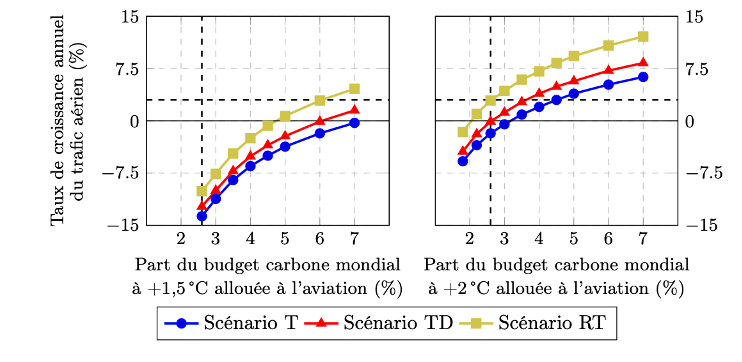

Autres travaux intéressants
Nous ne sommes pas les seuls à nous interesser aux enjeux énergie-climat pour l'aérien, le spatial ou pour les autres activités humaines, et c'est tant mieux ! Vous trouverez ici une liste de publications qui nous inspirent, nous interpellent ou nous citent parfois. Bref, ici, nous vous proposons d'aller voir ailleurs si nous y sommes !
|
|
Rapport sur le secteur aérien
(Pour un réveil écologique, Mars 2024)
-
Avec ce nouveau rapport sur l’aérien, PRE interpelle, avec l’énergie et style que nous lui
connaissons, le secteur aérien sur sa réponse au défi du changement climatique. Si des
avancées sont soulignées, le principal reproche qui lui est fait est celui de « technosolutionisme ». Ce néologisme barbare véhicule l'idée que la seule innovation technologique serait suffisante
pour résoudre le problème. Si ce « technosolutionisme » sonne comme un reproche chez les uns, l’approche technologique structure le discours et l’action des autres, propulsés par l’esprit des pionniers de l’aviation, capables de se dépasser et de réussir là où la majorité renonce. Ainsi, quand la société civile et scientifique alerte sur le changement climatique et l’impact de l’aérien, l’avionneur répond par un nouvel avion et le transporteur promet de révolutionner le transport.
Malheureusement, la nature et l’ampleur du problème auquel nous faisons face font que ces réponses, même ambitieuses, font peser des risques importants sur les objectifs climatiques, mais aussi sur la propre capacité du secteur à survivre dans un monde en proie aux instabilités d’origine climatique et énergétique. De plus, et surtout, la promesse d’une solution technologique décarbonante totale évite le questionnement sociétal, la réflexion, personnelle et collective, sur les usages et les possibilités d’habiter le monde sans son forfait énergie-matière illimité à disposition. Moins nous envisageons cette situation, plus nous la subirons. Ce qui est en jeu, pour le secteur aérien comme pour chacun de nous, c’est la capacité à porter notre regard et nos actions au-delà de nos intérêts personnels et immédiats, c’est notre capacité à remettre en cause les schémas qui nous ont permis de nous développer jusqu’à présent, mais qui ne peuvent plus fonctionner en ressources finies. La prise de conscience des limites planétaires nous appelle à passer de l’adolescence à l’âge adulte énergétique, avec ses limites, mais aussi ses nouvelles possibilités. Engager un tel virage de positionnement stratégique est un vrai défi, mais la tempête est annoncée droit devant, et les alarmes n’en finissent plus de clignoter. C’est ici qu’il faut ouvrir la voie, que tout est à inventer, avec courage, détermination et humanisme, c’est-à-dire dans l’esprit des pionniers de l’aviation. « Etre homme, c'est précisément être responsable. C'est connaître la honte en face d'une misère qui ne semblait pas dépendre de soi. C'est être fier d'une victoire que les camarades ont remportée. C'est sentir, en posant sa pierre, que l'on contribue à bâtir le monde. » Terre des Hommes, A. de Saint-Exupéry. Accéder au rapport |

|
Le Plan de Transformation de l'Economie Francaise
(The Shift Project, Première publication Janvier 2022)
+
Chantier majeur du Shift Project, le Plan de Transformation de l'Economie Française (PTEF) vise à proposer des voies pragmatiques pour décarboner l'économie, secteur par secteur, en favorisant la résilience et l'emploi.
Initié au début du premier confinement, ce plan s'inscrit dans dans la perspective du fameux "monde d'après", et a vocation à alimenter le débat public. Il s'agit de concevoir un plan à grande échelle un programme systémique de mesures opérationnelles (fiscales, réglementaires, économiques, sociales, organisationnelles) destinéées à rendre l'économie française effectivement compatible avec la limite des 2°C désormais communément prise pour objectif. Le secteur de la mobilité longue distance est bien-sûr traité avec le rapport Voyager bas carbone. Accéder au PTEF |
|
|
Référentiel ISAE-SUPAERO aviation et climat
(Scott Delbecq, Jérôme Fontane, Nicolas Gourdain, Hugo Mugnier et Thomas Planès, Septembre 2021)
+
Publié quelques mois après, le Référentiel aviation et climat apporte une confirmation académique de la méthodologie d'analyse et de modélisation utilisée dans Pouvoir Voler en 2050, notamment l'approche par émissions cumulées & budget carbone.
Cependant, plutôt que de considérer un budget carbone en hypothèse de travail et d'en déduire la croissance du traffic possible selon les scénarios technologiques (+2,5% pour le scénario "Maverick" et -0,8% pour le scénario "Iceman" au niveau monde dans PVE 2050), le Référentiel se propose de regarder la sensibilité de la croissance de traffic permise en fonction d'un budget carbone donné, qui devient ainsi une variable d'entrée du modèle plutôt qu'une hypothèse de travail. Cette approche permet de produire les courbes très intéressantes suivantes :

Ainsi, si le Référentiel ne se positionne pas sur une hypothèse de budget carbonne, si les scénarios technologiques (T, TD et RT) ne sont pas exactement équivalents à "Maverick" et "Iceman", les résultats obtenus sont cohérents avec, et confirment ceux de PVE 2050. Par ailleurs, l'analyse physique des technologies décarbonnantes est largement plus approfondie. Ainsi, si le lecteur a quelques connaissances en ingénieurie aéronautique, ce travail de grande qualité constitue une mine d'apprentissages et de réflexions passionnante.
Un certain nombre de membres d'AÉRO DÉCARBO ont eu le privilège d'étudier sur les bancs de l'ISAE-SUPAERO. Ce travail et ce positionnement l'honorent, nous touchent et, espérons-le, permettront de diffuser encore plus largement l'approche factuelle et scientifique des défis et risques auxquels le secteur aérien devra faire face dans un monde en profond changement. Accéder au rapport |